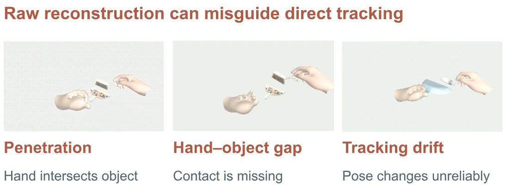
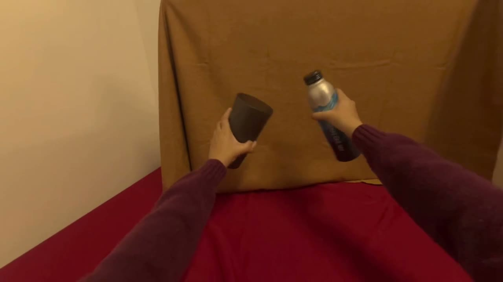

01 / RECONSTRUCT
Video Reconstruction
Reconstruct hand and object motion from egocentric video to obtain trajectories and contact cues. Spatial and temporal alignment, grasp filtering, and inverse kinematics adapt these references to the robot.
SUBMITTED TO ICRA 2027
From Human Videos to Bimanual Dexterous Manipulation Data
Research Intern · UC Berkeley — Tomizuka MSC Lab
Project period: June–September 2026
Turning egocentric human videos into physically validated robot demonstrations through confidence-guided reinforcement learning.
PriDex combines video-based 3D reconstruction with a confidence-guided RL teacher to generate physically validated robot demonstrations. Trained teachers can repeatedly roll out successful task executions, producing data for downstream visual policy learning.
Egocentric video → 3D reconstruction → Confidence-guided RL teacher → Successful rollouts → Robot demonstrations → Visual policy deployment
Human videos provide useful motion and contact references. Reconstructed geometry can contain hand–object gaps, penetration, and tracking drift, while robot kinematics impose additional constraints. PriDex uses reconstruction confidence to adapt how closely the RL teacher follows those references.

01 / RECONSTRUCT
Reconstruct hand and object motion from egocentric video to obtain trajectories and contact cues. Spatial and temporal alignment, grasp filtering, and inverse kinematics adapt these references to the robot.
02 / ESTIMATE CONFIDENCE
Use 3D-to-2D reprojection and point tracking to assess object position and rotation estimates. The lowest score within each frame determines its high, medium, or low confidence category.
03 / LEARN
Frame-level confidence controls the policy’s exploration range and residual action bounds. Lower confidence allows larger deviations from the reconstructed reference. A human wrist-motion direction reward provides additional guidance under low confidence.
04 / RECORD
Roll out trained RL teachers and retain executions that pass task-specific simulation success checkers. Record robot proprioception, actions, and observations from two wrist cameras and a head camera for downstream visual policy learning.
Follow each stage from the human observation to the deployed visual policy.
01 / OBSERVE
Human RGB video provides motion and contact observations for reconstructing the interaction.
I co-developed the reconstruction pipeline with teammates.

Residual RL adapts robot execution around reconstructed references; the reference reconstruction remains fixed during policy learning.
30% → 63.3%
Average real-world task success
across three manipulation tasks.
Adding simulation-generated demonstrations to real demonstrations improved the performance of the downstream visual policy on pouring, plate cleaning, and tabletop sweeping.
| Training data | Success rate |
|---|---|
| Real demonstrations only | 30 |
| Real + simulation-generated demonstrations | 63.3 |
These results evaluate the downstream visual policy on the physical robot. Real-world success is judged manually; simulation demonstrations are filtered using the corresponding task-specific success checker.
Switch between three tasks to compare the human demonstration, a trained RL teacher rollout, and the downstream visual policy on the real robot.
Source RGB footage
Trained RL teacher · 3× speed
Visual policy · 3× speed
The clips show representative executions. Simulation footage shows trained teacher rollouts; each task is evaluated using its corresponding success criteria.
I led confidence estimation and confidence-guided residual PPO, using reconstruction reliability to adapt exploration and residual action bounds, with a wrist-motion direction reward under low confidence.
PriDex has been submitted to ICRA 2027. Paper and code links will be added when public releases are available.
Task-specific checks define which simulated executions become training data. The selected demonstrations illustrate the pipeline under the tested task conditions.